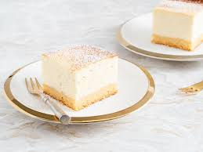

Przepis na sernik

| Lp | Skład | Ilość (g) |
|---|
| 1 | Kalorie | 2000 |
| 2 | Węglowodany | 360 |
| 3 | Białko | 2 |
| 4 | Sól | 100 |
| 5 | Tłuszcz | 240 |
Składniki
- jajka 4 szt
- śmietana 30% 250 ml
- biszkopty 500 g
- twaróg sernikowy 1 kg
Przygotowanie
- Wymieszaj twaróg sernikowy ze śmietaną mikserem
- Dodaj do mieszanki jajka i ponownie zamieszaj
- Wyłóż blachę na której będziesz piec papierem do pieczenia i biszkoptami
- Wylej masę do blachy i piecz przez godzinę w temperaturze 200^
Wyjaśnienia
Śmietana może również być 20%
Biszkopty to takie okrągłe ciastka
Jeżeli:
- udał Ci się sernik, to zostaw dobrą opinię
- nie udał Ci się sernik, to coś źle zrobiłeś